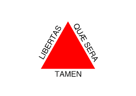
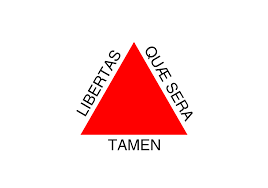

Nossa História
Surgimos no ano de 2016, com o objetivo de trazer o
melhor café a cidade de Juatuba! Somos fruto da
junção de diversas culturas e experiências, nos
inspiramos nos melhores baristas do mundo para
construir nosso cardápio, tudo isso para lhe entregar
o melhor café! Nosso menu é a união de diversas
culturas, entre elas podemos listar;  a inglesa,
a inglesa,  francesa, e
francesa, e  italiana, porém não
perdemos nossas origens, todos os itens tem um toque
especial da cultura de  Minas Gerais, que não poderia faltar.
italiana, porém não
perdemos nossas origens, todos os itens tem um toque
especial da cultura de  Minas Gerais, que não poderia faltar.
Nos buscamos:
- Entregar o melhor café e a melhor experiência em uma cafeteria
- Valorizar os produtos locais
- Reunir diversas referências, estamos abertos a todas as críticas e sempre buscamos melhorar
Mais informações
Menu
Confira nosso menu, ele foi
selecionado a dedo pelos melhores baristas do
mundo. Seus drinks são preparados por uma
equipe treinada e altamente profissional.
Temos bebidas para todos os gostos, tudo isso
pensando em você e no seu bem estar. E nossos grãos
são escolhidos a dedo!
Entre em contato
Entre em contato conosco atraves de nosso e-mail
comercial, estamos dispostos a responder todas as dúvidas
e abertos a todas as sugestões.
Localização

Estamos localizados no centro da cidade,
dentro da galeria São Paulo, na rua Amazonas n°
365, próximo a prefeitura! Venha nos fazer uma
visita.